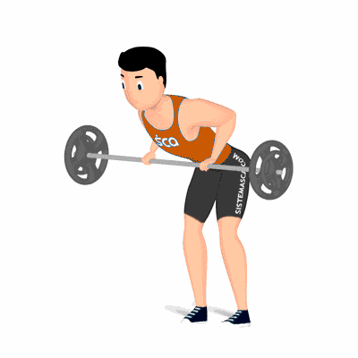

Remada Curvada com Barra

Exercício efetivo que abrange costas ou dorsais. Realiza um movimento composto, assim como, o agachamento ou levantamento terra que estimula grandes músculos e demanda consciência corporal. Indicado a praticante de musculação nível avançado.
Ficha Técnica
Tipo: Musculação
Grupo Muscular: Costas
Aparelho: Nenhum
Músculos: Nenhum
Como realizar
- Na posição em pé, pernas afastadas, joelhos levemente flexionados;
- Segure uma barra com as mãos na mesma largura dos ombros, pegada em pronação;
- Com a coluna alinhada, incline o troco para frente e mova o quadril para trás, até a barra na altura das coxas com os cotovelos estendidos;
- Puxe a barra até a cintura, flexionando os cotovelos na lateral do corpo;
- Segure a contração por um instante e retorne a barra à posição inicial de forma controlada;
- Repita o movimento.
 RC STORE
RC STORE